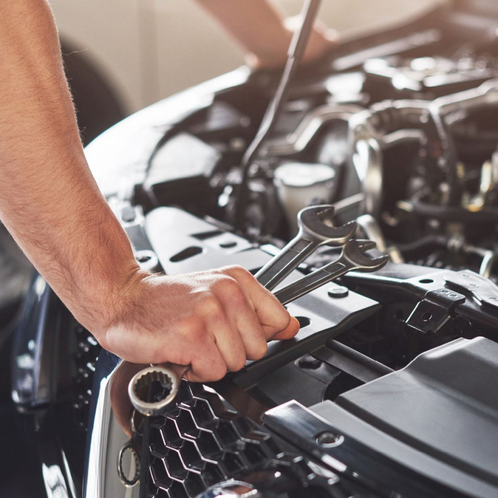

Encuentra informacion a cerca de el mundo de la mecanica auto motriz. Informacion completa de algunos de los
vehiculos y marcas mas conocidos y los diferentes componentes que permiten el funcionamieno de estos.
La mecánica automotriz es una rama fundamental para entender cómo funcionan los vehículos de tracción
mecánica. En esencia, se ocupa de estudiar y aplicar los principios de la física y la mecánica para la
generación y transmisión del movimiento en sistemas automotrices. Algunos de los componentes que analiza
incluyen el motor, la correa de distribución, el árbol de levas, el embrague y la caja de cambios. Además de
reparar, la mecánica automotriz también se enfoca en el mantenimiento preventivo para evitar problemas
futuros.
